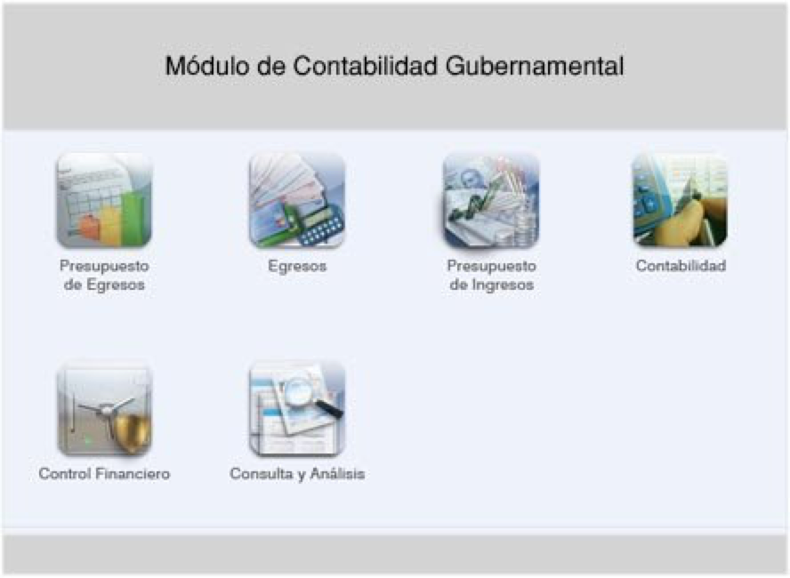

Contabilidad gubernamental
El proyecto consiste en la implantación de un sistema de información que sirva de herramienta para el control de los recursos financieros asignados a la institución, este sistema, concentra y administra la información generada durante la gestión de los recursos financieros en las diferentes etapas del proceso de administración del gasto público, tales como: la elaboración y control de los presupuestos, el proceso de pagos, el registro contable y la rendicion de cuentas. Dicho proyecto establece los mecanismos necesarios para garantizar el adecuado registro de las transacciones en tiempo real y permitir la generacion de informacion confiable y oportuna de caracter contable y presupuestario para la toma de decisiones encaminadas a mejorar las finanzas de la institución.
